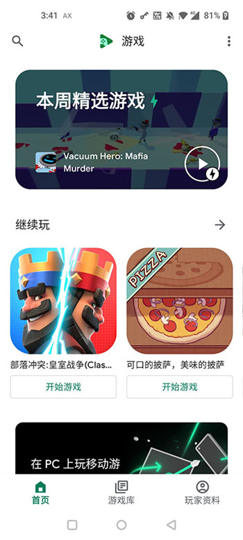

Google Play Games 避坑指南：我踩过这五个坑才玩得顺手
Google Play Games PC 版看着简单，实则藏了不少容易翻车的细节——控件同步失效、快捷方式图标错乱、Win 键泄漏、竖屏拉伸、搜不到已装游戏。本文逐个拆解症状、原因和解法。
第一次在 PC 上跑 Google Play Games 是去年冬天，从官网装完客户端满心以为装上就能玩，结果没出一周踩了五六个坑。有的是操作误区，有的是 Google 没说清楚的隐性限制，还有的是 Android 游戏搬到 PC 上天生带的毛病。这篇把我踩过的坑整理出来，每个都讲清楚症状、原因和怎么救，省得你一个个撞。
坑一：控件映射配完，换台电脑全没了
症状：在公司电脑上辛辛苦苦给某款 MOBA 配好了摇杆、技能键、镜头滑动，回家打开同一个游戏，左侧面板空空如也——之前配好的键位一个都不剩。重新进编辑器一看，本地的配置也没了。
原因：控件方案默认自动保存到你的 Google 账号里，但这个同步机制有个前提——游戏本身必须接入了 Google Play Games 服务。不是所有 Android 游戏都接了这套成就/排行榜/云存档体系，那些没接入的游戏，你在本地配的控件方案只存在当前这台机器的本地存储里，换电脑自然丢。还有一种情况是网络问题导致同步失败，Google Play Games 的账号同步走的是 Google 自家的服务器，国内网络偶尔会掉链子。
解法：先看游戏详情页有没有那个「Google Play Games」徽章，没有的话别指望云同步——配好之后立刻用编辑器里的「导出」功能，把那串长文本复制到备忘录里存着，换电脑时「导入」粘贴进去就能秒恢复。有徽章但同步还是不生效的，检查一下 Google 账号的登录状态，退出再重新登录一次，或者换个网络环境等几分钟再开游戏。
坑二：快捷方式图标变成 Google Play Games 的 Logo
症状：给某款赛车游戏创建了桌面快捷方式，结果桌面上显示的不是那款赛车的图标，而是 Google Play Games 自己的彩色三角形 Logo。开始菜单里的快捷方式偶尔也会这样。
原因：快捷方式的图标是直接从游戏 APK 里提取的——这是 Google Play Games 的设计，不是它自己画的图标。但 Windows 有个图标缓存机制，提取完的图标会被缓存在系统里。如果提取过程中 Google Play Games 还没完全下载完 APK（你点「创建快捷方式」时游戏可能只下载了一部分），它就会退而求其次用自己的 Logo 占位。后续即使 APK 下载完整了，Windows 也不会自动刷新那个缓存。
解法：先确认游戏已经完整下载安装（进主界面看进度条是不是全绿，没下全可以去官方下载补一下），然后删除桌面上那个错图标的快捷方式，重新右键 → 创建快捷方式。如果还是不对，手动刷新一下 Windows 图标缓存——按 Win+R 输 ie4uinit.exe -show 回车，或者在桌面右键 → 查看 → 刷新。大部分情况重建一次就能好，个别顽固的多刷几次缓存也行。别为了这个去卸载重装游戏，完全没必要。

坑三：窗口模式下按 Win 键不小心跳出游戏
症状：玩着玩着不小心按到 Win 键，游戏直接最小化跳回桌面，刚才还在进行的对战瞬间暂停。有时候 Alt+Tab 切出去查攻略，切回来时游戏帧率掉了一大截，要等几秒才能恢复流畅。
原因：这不是 Google Play Games 的 bug，而是窗口模式的天生属性。窗口模式下 Windows 认为游戏只是一个普通的窗口，所以所有系统快捷键（Win、Win+D、Win+E、Alt+Tab）都会正常响应。Google Play Games 在窗口模式和无边框窗口模式下都做不了全局快捷键拦截——只有全屏独占模式才能把 Windows 的输入挡在外面。还有一点，窗口模式比全屏独占多了一层窗口管理器的合成开销，GPU 不是直接输出到显示器的，所以切出去时游戏的渲染管线会有短暂阻塞。
解法：竞技类、FPS 这类一秒都不能掉链子的游戏，老老实实切到全屏独占模式——Shift+Tab 呼出浮窗 → 视觉设置 → 显示模式里选「全屏独占」，三种模式的详细对比在Google Play Games文档里也有讲。代价是 Alt+Tab 切换会有 0.5 到 2 秒的黑屏延迟，但换来了 Win 键完全不会泄漏、帧率最稳、画面撕裂概率最低。如果你是多任务玩家（玩着游戏还得同时看攻略直播），用无边框窗口模式当妥协方案——Alt+Tab 切换不黑屏，Win 键还是会泄漏，但画面流畅度比纯窗口模式好不少。
坑四：竖屏游戏在 PC 上被拉伸成大饼脸
症状：装了一款卡牌类游戏，在手机上好好的竖屏布局，搬到 PC 上要么被硬拉成横屏大饼脸，要么两侧留着大黑边，画面缩在中间一小块看着特别憋屈。
原因：绝大多数 Android 游戏是横屏（16:9）或竖屏（9:16）固定方向设计的，而 PC 显示器基本都是横屏比例。Google Play Games 会自动做适配，但它的自动适配逻辑有时候很蠢——遇到竖屏游戏，它优先选「保持比例」，所以把竖屏画面按比例塞进横屏窗口，两侧自然就是黑边。个别游戏的 Android 版本身就不允许窗口化（强制全屏），Google Play Games 虽然能强制窗口化，但画面比例还是游戏自己写死的，改不了。
解法：Shift+Tab 呼出浮窗 → 视觉设置，找「强制窗口模式」开关打开——这样不管游戏本身支不支持窗口化，你都能手动拉窗口大小。竖屏游戏拉窗口时别横向拉太宽，改成纵向拉长一点，让窗口变成一个竖长的条状放在屏幕角落，画面就不会被压扁了。如果非要全屏玩，接受黑边是唯一解——保持比例比拉成大饼脸好。
坑五：游戏目录里搜不到手机上明明装过的游戏
症状：手机上某款游戏玩了好几百小时，打开 PC 版 Google Play Games 搜它的名字，结果出来一堆不相干的。回到「我的游戏」里找，显示的是「未安装」状态——说明 Google 知道你手机上过这款，但就是不让你在 PC 上装。
原因：这不是你搜错了，是这款游戏还没被 Google 标记为支持 PC 运行。Google Play Games 的 PC 版有自己的一套兼容性白名单——它会实际测试每款游戏在 PC 上的表现（性能、键鼠操控、显示兼容性），测过才标记「已测试可在 PC 上运行」。没测过的游戏在目录里会被隐藏，你搜名字也搜不到。这个标记是游戏开发者提交更新时可以主动申请的，但不是所有开发者都在跟进。
解法：先确认一下——用 Google Play Games PC 版主界面的「我的游戏」标签，手机上装过的游戏会以灰色卡片显示在那里，点卡片上的「了解原因」会告诉你为什么 PC 不支持。大部分情况是 Google 还没把它加入 PC 测试队列，不是这款游戏永远不能在 PC 上跑。耐心等 Google 测试完或者开发者主动申请 PC 支持，定期刷一下目录看看状态有没有变。
防坑清单
整理一下，下次再装 Google Play Games 先过一遍：
- 控件方案：没带 Google Play Games 徽章的游戏，配完立刻导出备份，别指望云同步
- 快捷方式图标：等游戏完全下载好再创建，图标不对就删了重建 + 刷新系统图标缓存
- 显示模式：竞技类必用全屏独占，多任务用无边框窗口，别用纯窗口模式玩严肃游戏
- 竖屏游戏：打开强制窗口化，拉成竖长小窗，接受黑边比拉伸好
- 搜不到游戏：先看「我的游戏」里有没有灰色卡片，有就说明 Google 知道你有但还没测试 PC 兼容性，不是你搜错了
最后说一句
Google Play Games 的 PC 版本质上是在 Android 兼容层上跑游戏，先天带着一些 Android 到 PC 的适配问题。但它解决的痛点很实在——键鼠操控、游戏进度跨设备同步、不用单独装模拟器就能玩 Android 游戏。关于这款软件的完整中文资料，我在GitHub、Gitee、GitCode三个仓库都做了备份，国内外访问都能覆盖到。知道这些坑之后，这软件其实相当省心。